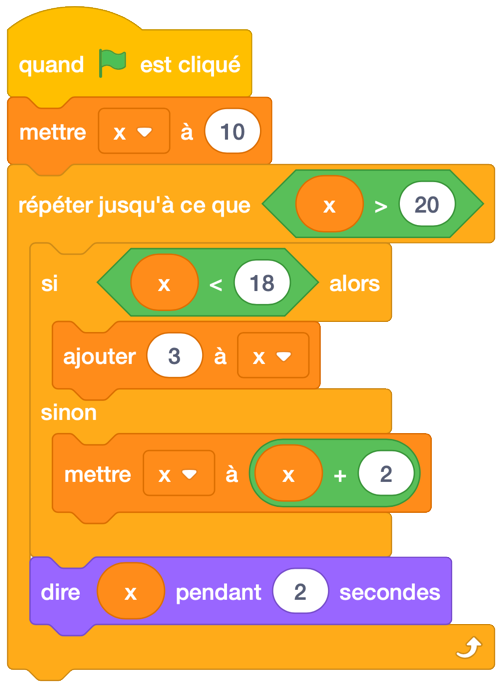
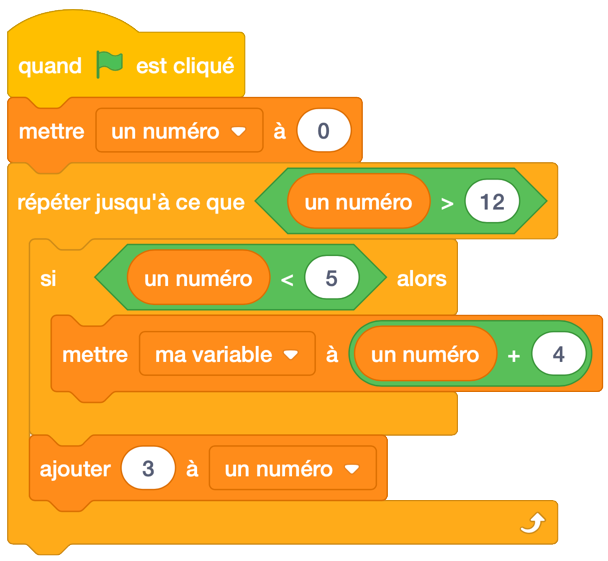

5. Code de traçage (tracing code) et Mouvement en parabole (Répéter jusqu’à (repeat unitl))¶
Aperçu rapide de la journée
Introduisez le bloc répéter jusqu’à en traçant le code avec des variables simples et des conditionnelles. Utilisez le bouton Répéter jusqu’au bloc pour simuler le mouvement d’un boulet de canon (le mouvement se répète jusqu’à ce que le boulet atteigne le sol).
Principes et techniques fondamentaux (PT):
- 20IN-PT.1 Appliquer diverses stratégies de résolution de problèmes pour résoudre des problèmes de programmation dans le cours d’Informatique 20.
Fondements de la programmation (FP):
- 20IN-FP.1 Se servir de différents types de données, y compris entier, virgule flottante, booléen et chaine pour résoudre des problèmes de programmation.
- 20IN-FP.2 Faire des recherches sur la manière dont les structures de contrôle affectent le déroulement du programme.
Si vous préférez regarder une vidéo, la vidéo suivante montre les mêmes idées que celles que j’ai décrites dans le texte ci-dessous.
5.1. Répète jusqu’à¶
Parfois, nous ne savons pas nécessairement combien de fois nous devrions répéter un bloc dans notre code. Nous tirons peut-être un canon virtuel et nous voulons que le boulet de canon continue à bouger jusqu’à ce que la balle touche le sol. Selon les valeurs des forces que nous appliquons au boulet de canon (gravité, vent, frottement, etc.), le nombre de fois que nous devrions répéter le code contenant le mouvement du boulet de canon changera. Dans ces situations, nous voulons utiliser le bloc “répéter jusqu’à”…” “.

Tout code placé à l’intérieur du bloc “répéter jusqu’à”…” “ continuera à se produire jusqu’à ce que la condition soit vraie. Par exemple, nous pourrions faire avancer un personnage de 10 pas dans n’importe quelle direction jusqu’à ce qu’il touche le bord de l’écran.

5.2. Tracer un bloc Répéter jusqu’à ayant des variables¶
Un moyen de vous assurer que vous comprenez comment fonctionne un bloc répété jusqu’à”…” consiste à essayer de tracer le code qui contient un bloc répété jusqu’à”…”. Tracer le code est simplement de lire le code dans le même ordre que l’ordinateur lira le code, ce qui peut signifier de répéter certaines parties du code.
Pour pratiquer cette compétence, considérez le code ci-dessous. Si vous décidez de recréer le code ci-dessous dans Scratch, notez que vous devrez d’abord cliquer sur l’onglet Données, puis créer une variable nommée x.
Note
Note pour l’enseignant: Le fait de tracer le code avec les élèves à l’aide d’un graphique en t sur un tableau blanc est un excellent moyen d’introduire l’idée de code de traçage.
Lorsque nous traçons le code ci-dessus, il peut être très utile d’utiliser un T-Chart pour organiser notre réflexion.
| Itérations (nombres de fois que la répétition a été répété) | valeur de x |
|---|---|
| 0 | |
| 1 | |
| 2 | |
| 3 | |
| 4 | |
| 5 |
Itérations désigne le nombre de fois qu’un bloc de répétition s’est produit. Maintenant, nous devons parcourir le code, une ligne à la fois pour nous assurer que nous comprenons ce qui se passera à chaque étape. Après 0 itérations (c’est-à-dire avant l’exécution du bloc de répétition), la valeur de x est définie sur 10, nous la remplissons donc dans notre tableau.
| Itérations (nombres de fois que la répétition a été répété) | valeur de x |
|---|---|
| 0 | 10 |
| 1 | |
| 2 | |
| 3 | |
| 4 | |
| 5 |
Maintenant, nous devons réfléchir à la première itération de la boucle. Avant d’entrer dans la boucle, nous devons confirmer que la boucle va vraiment se produire. Puisque notre valeur de x est actuellement 10, nous entrons dans la boucle, car nous devons répéter jusqu’à ce que x soit supérieur à 20. Dans la boucle, nous rencontrons une instruction si qui nous devons résoudre. Puisque 10 est inférieur à 18, nous exécutons le code à l’intérieur de l’instruction if (et non le code à l’intérieur de la partie sinon). Changer x par 3 ajoute simplement 3 à la valeur précédente de x, donc nous sommes maintenant à la valeur 13. Le dernier bloc à l’intérieur de la boucle est simplement un bloc “dire”, ce qui n’affectera pas la valeur de x. Remplissez la ligne suivante de notre tableau.
| Itérations | Valeur de x |
|---|---|
| 0 | 10 |
| 1 | 13 |
| 2 | |
| 3 | |
| 4 | |
| 5 |
La flèche sur la partie inférieure du bloc de répétition indique que le déroulement du code reviendra au début du bloc de répétition. Nous devons maintenant confirmer à nouveau que la boucle se reproduira. Puisque 13 n’est pas supérieur à 20, nous devons répéter à nouveau. 13 est inférieur à 18, nous exécutons donc à nouveau le bloc de code dans l’instruction si, ce qui modifie x par 3 pour obtenir x=16. Notez que nous n’exécuterons jamais à la fois le code dans la partie si et la partie sinon. exécuter une partie ou l’autre, jamais les deux.
| Itérations | Valeur de x |
|---|---|
| 0 | 10 |
| 1 | 13 |
| 2 | 16 |
| 3 | |
| 4 | |
| 5 |
Le même processus se reproduit. Puisque 16 est inférieur à 20, la boucle continue. Comme 16 est inférieur à 18, nous changeons x de 3 pour obtenir une nouvelle valeur de 19.
| Itérations | Valeur de x |
|---|---|
| 0 | 10 |
| 1 | 13 |
| 2 | 16 |
| 3 | 19 |
| 4 | |
| 5 |
Comme 19 est inférieur à 20, nous entrons dans la boucle à nouveau. Cependant, lorsque nous examinons l’instruction if, 19 étant inférieure à 18, nous exécutons le code dans le bloc sinon. Nous avons donc besoin de mettre x à x + 2. C’est juste une autre façon de dire que nous allons changer x par 2, donc notre nouvelle valeur pour x est 21. Vous pouvez lire le bloc comme “définir x comme valeur précédente de x plus 2 “.
| Itérations | Valeur de x |
|---|---|
| 0 | 10 |
| 1 | 13 |
| 2 | 16 |
| 3 | 19 |
| 4 | 21 |
| 5 |
Encore une fois, avant d’entrer dans la boucle, nous devons vérifier si la condition de répétition est remplie. Puisque 21 est supérieur à 20, la condition de répétition est remplie, nous ne rentrons donc pas dans la boucle. Si nous avions un autre bloc accroché au bas du bloc de répétition, il s’exécuterait maintenant. Comme nous n’avons pas un autre bloc a exécuter, le programme a pris fin.
5.3. Activité en classe: Répéter jusqu’à¶
Votre enseignant vous remettra une copie imprimée du document de pratique suivant. Scratch répèter jusqu'à pratique.
Maintenant que vous avez vu comment tracer le code contenu dans une répétition jusqu’au blocage, prenez quelques minutes pour essayer de remplir la fiche de pratique ci-dessus. Après avoir rempli chaque question, vous pouvez vérifier votre travail en recréant la question dans Scratch.
Note
Remarque pour l’enseignant: Au lieu de demander aux élèves de recréer les problèmes dans Scratch pour vérifier leur travail, il peut être très utile de tracer le code ensemble en tant que classe. Écrire un tableau sur un tableau blanc est un bon moyen de parler de ces problèmes.
Si vous souhaitez modifier le document Scratch répèter jusqu’à pratique, vous pouvez télécharger le document word à modifier.
5.4. Déplacement d’un boulet de canon en utilisant un bloc de répétition¶
Utilisons le bloc “répété jusqu’à” pour créer une simulation d’un boulet de canon en cours de tir. Premièrement, nous devons faire un boulet de canon. Pour ce faire, cliquez sur le pinceau à côté de Nouveau sprite (sous la scène):
Le processus de création du sprite de boulet de canon est illustré en étapes ci-dessous. Il y a quelques choses que vous devez savoir:
- Lorsque vous tracez le cercle, vous pouvez appuyer la touche Maj (shift) pour forcer l’ellipse à rester circulaire.
- assurez-vous que votre boulet de canon se trouve directement au-dessus du point central sur la toile (ceci est plus facile à voir si vous zoomez une ou deux fois).
Note
Dans la version précédente de Scratch (Scratch 2), il vous aurait fallu:
- Cliquer “vectoriser” avant de faire un dessin! Il à fallu faire cela chaque fois pour vous assurer que la qualité de vos graphiques soit le plus élevée que possible. Votre enseignant peut décider d’approfondir la différence entre les graphiques vectoriels et bitmap.
- Lorsque vous dessinez le cercle, vous pouvez maintenir la touche Maj (shift) enfoncée pour forcer l’ellipse à rester circulaire.
- Identifier le centre du costume (puisque les calculs relatifs aux coordonnées x et y du sprite sont basés sur le point central du costume).
Pour créer la simulation de boulet de canon, nous avons besoin de quelques variables représentant la vitesse à laquelle le boulet de canon se déplace. Cliquez sur l’onglet Données et créez deux variables: vitesseX et vitesseY. Ensuite, créez un script qui ressemble à ceci:

Lorsque vous appuyez sur la touche espace, le boulet de canon reviendra à sa position initiale (à gauche de l’écran) et les variables vitesseX et vitesseY seront toutes deux définies comme 4. Le bloc répéter jusqu’à ce que constate que la répétition va countinuer jusqu’à ce que la position y du sprite soit inférieure à -159. Le bloc **mettre y à “”* se trouve au bas de l’onglet Mouvement*. Pour résumer, tout ce qui se trouve à l’intérieur du bloc de répétition continuera jusqu’à ce que le boulet de canon atteigne le niveau du sol virtuel (défini comme étant -159).
Enfin, nous modifions les coordonnées x et y du sprite par les variables vitesseX et vitesseY. Le dernier bloc de code dans le répéter jusqu’à correspond à la façon dont nous simulons la gravité. À chaque itération (cicle complet de la répétition) de la boucle la valeur de la variable vitesseY diminue. Parce que nous commençons avec une vitesse y positive, le boulet de canon se déplace vers le haut lorsque la touche espace est enfoncée. Au fil du temps, cependant, la vitesse à laquelle le boulet monte diminue, puis finit par devenir négatif (ce qui signifie qu’il commence à tomber). Cela nous permet de créer une simple simulation de mouvement parabolique.
Note
Expérimentez en modifiant les valeurs initiales données pour les variables vitesseX et vitesseY. Vous pouvez également vouloir ajuster la valeur de “gravité” (initialement définie à -0,1).
5.5. Vérifie ta compréhension¶
scratch-repeat-until3: Combien d’itérations le code suivant prend-il pour terminer son exécution? C’est-à-dire, combien de fois le bloc répéter jusqu’à ce que “” se produirait-elle?
scratch-repeat-until4: Quelle serait la valeur de la variable Un Number après l’exécution du code suivant?
5.6. Problème de pratique¶
Travaillez sur votre deuxième affectation Scratch, pour le temps restant.
Note
Si votre enseignant ne vous a pas assigné de projet, vous pouvez envisager de créer un simulateur Roche Paper Ciseaux pour mettre en pratique vos compétences Scratch. Vous devrez utiliser des variables, des blocs si-alor et des diffusions (envoyer à tous). Une extension intéressante de la version de base de ce projet est de permettre à l’utilisateur de choisir de jouer contre un autre joueur ou contre l’ordinateur; ou même l’ordinateur peut jouer contre soi-même.